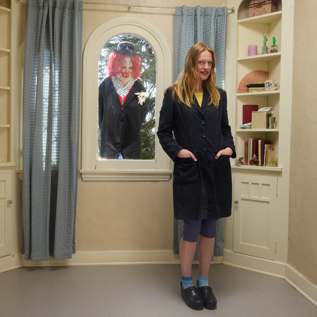

- 1. Sue me
- “Sue me I want to be wanted”
- 2. Shooting star
- I consider myself to be a semi spiritual person. I’m not really religious or anything but if there is one thing I believe in, it’s a sign. However, it’s difficult to decipher the meanings of these signs. Hobert sings “girl that’s not a shooting star, I’m sorry my bad I thought that it was” basically meaning she’s mistaken by whatever “sign” in her life she’s been met with. Basically, what I am trying to say is that Audrey Hobert is just as delusional as I am.
- 3. Thirst Trap
- Unfortunately, I am very concerned with what others think of me and how I am perceived. This song is pretty much explaining what it’s like to have a crush and putting on this facade to seem “more likeable.”
- 4. Sex and the City
- Sex and the city is one of my favorite tv shows of all time so for there to be a song written about it…I knew it was going to be important to me. Similar to shooting star, Hobert talks about how she's a big believer in “everything happens for a reason” and that life isn't as glamorous as Carrie Bradshaw makes it out to be.
- 5. Phoebe
- I think everyone has had a moment of feeling like the odd one out or feeling a bit kooky. If you’ve seen the show Friends (another one of my favorites) the character Phoebe is who inspired the title.
- 6. Wet hair
- I hate to admit it, but I do like attention from time to time. This song is a bit silly, as most of these all are. Hobert talks about showing up to a party with wet hair to seem like she was nonchalant and “didn’t care” hoping to grasp the attention fromother people at the party.
- 7. I like to touch people
- Don’t be afraid of this title like I initially was. This song is about more people pleasing and how Hobert likes to touch people’s hearts.
- 8. Bowling Alley
- This song is all about being a people pleaser but also seeking/craving attention… a pretty common theme. “It doesn't need to be about me all the time” is something that I must remind myself of from time to time as sad as it sounds.
- 9. Silver jubilee
- This song has the ultimate “I don’t want to be sad anymore let’s party” vibe.
- 10. Chateau
- This song is more about not feeling like you fit in and wanting to get out of a place you don't belong. Hobert is specifically talking about an experience she had in Chateau Marmont, a super-rich and famous hotel in Los Angeles. Being a girl from a small town in North Texas, I think you can figure out why this probably isn't the most relatable song for me.
- 11. Don't go back to his ass
- Unfortunately, I’m a sucker for a good second chance. A redemption arc. Believe people can change. And because of that, this song is not relatable to me.
- 12. Drive
- I am not a super big go with the flow type person. I am never “putting it in drive.” I am constantly pumping the brakes and analyzing the best route to take.